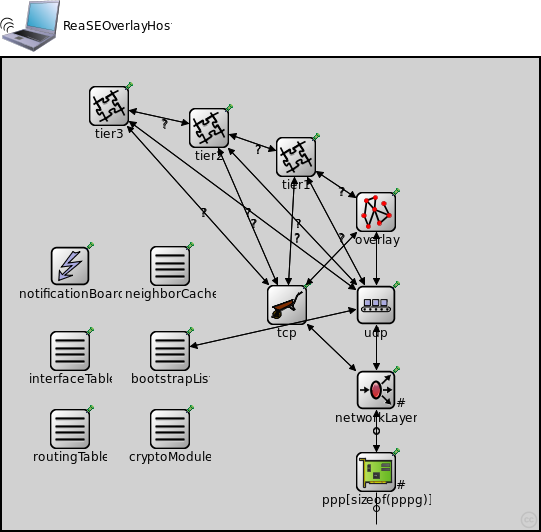
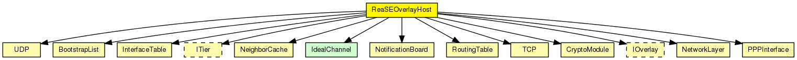
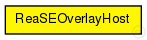

This documentation is released under the Creative Commons license
This documentation is released under the Creative Commons licenseHost that participates in the overlay
The following diagram shows usage relationships between types. Unresolved types are missing from the diagram. Click here to see the full picture.
The following diagram shows inheritance relationships for this type. Unresolved types are missing from the diagram. Click here to see the full picture.
| Name | Type | Default value | Description |
|---|---|---|---|
| overlayType | string |
overlay protocol compound module to use |
|
| tier1Type | string |
tier 1 application to use |
|
| tier2Type | string |
tier 2 module to use |
|
| tier3Type | string |
tier 3 module to use |
|
| numTiers | int |
number of tiers |
|
| routingFile | string | "" | |
| IPForward | bool | false |
| Name | Value | Description |
|---|---|---|
| display | bgb=537,472;i=device/wifilaptop_l;i2=block/circle_s |
| Name | Direction | Size | Description |
|---|---|---|---|
| pppg [ ] | inout |
gates from router |
|
| ethg [ ] | inout |
placeholder for zero-size vector |
|
| overlayNeighborArrowIn [ ] | input |
incoming gate for visualizing overlay neighborship with connection arrows |
|
| overlayNeighborArrowOut [ ] | output |
incoming gate for visualizing overlay neighborship with connection arrows |
| Name | Type | Default value | Description |
|---|---|---|---|
| tcp.advertisedWindow | int | 14*this.mss |
in bytes, corresponds with the maximal receiver buffer capacity (Note: normally, NIC queues should be at least this size) |
| tcp.delayedAcksEnabled | bool | false |
delayed ACK algorithm (RFC 1122) enabled/disabled |
| tcp.nagleEnabled | bool | true |
Nagle's algorithm (RFC 896) enabled/disabled |
| tcp.limitedTransmitEnabled | bool | false |
Limited Transmit algorithm (RFC 3042) enabled/disabled (can be used for TCPReno/TCPTahoe/TCPNewReno/TCPNoCongestionControl) |
| tcp.increasedIWEnabled | bool | false |
Increased Initial Window (RFC 3390) enabled/disabled |
| tcp.sackSupport | bool | false |
Selective Acknowledgment (RFC 2018, 2883, 3517) support (header option) (SACK will be enabled for a connection if both endpoints support it) |
| tcp.windowScalingSupport | bool | false |
Window Scale (RFC 1323) support (header option) (WS will be enabled for a connection if both endpoints support it) |
| tcp.timestampSupport | bool | false |
Timestamps (RFC 1323) support (header option) (TS will be enabled for a connection if both endpoints support it) |
| tcp.mss | int | 536 |
Maximum Segment Size (RFC 793) (header option) |
| tcp.tcpAlgorithmClass | string | "TCPReno" |
TCPReno/TCPTahoe/TCPNewReno/TCPNoCongestionControl/DumbTCP |
| tcp.sendQueueClass | string | "TCPVirtualDataSendQueue" |
TCPVirtualDataSendQueue/TCPMsgBasedSendQueue |
| tcp.receiveQueueClass | string | "TCPVirtualDataRcvQueue" |
TCPVirtualDataRcvQueue/TCPMsgBasedRcvQueue |
| tcp.recordStats | bool | true |
recording of seqNum etc. into output vectors enabled/disabled |
| networkLayer.ip.procDelay | double | 0s | |
| networkLayer.arp.retryTimeout | double | 1s |
number seconds ARP waits between retries to resolve an IP address |
| networkLayer.arp.retryCount | int | 3 |
number of times ARP will attempt to resolve an IP address |
| networkLayer.arp.cacheTimeout | double | 120s |
number seconds unused entries in the cache will time out |
| ppp.ppp.mtu | int | 4470 | |
| neighborCache.rpcUdpTimeout | double |
default timeout value for direct RPCs |
|
| neighborCache.rpcKeyTimeout | double |
default timeout value for routed RPCs |
|
| neighborCache.optimizeTimeouts | bool |
calculate timeouts from measured RTTs and network coordinates |
|
| neighborCache.rpcExponentialBackoff | bool |
if true, doubles the timeout for every retransmission |
|
| neighborCache.debugOutput | bool |
enable debug output |
|
| neighborCache.enableNeighborCache | bool |
use neighbor cache for reducing ping traffic? |
|
| neighborCache.rttExpirationTime | double |
expiration of the validity of the measured rtts |
|
| neighborCache.maxSize | double |
maximum size of the cache |
|
| neighborCache.rttHistory | int | ||
| neighborCache.timeoutAccuracyLimit | double | ||
| neighborCache.defaultQueryType | string | ||
| neighborCache.defaultQueryTypeI | string | ||
| neighborCache.defaultQueryTypeQ | string | ||
| neighborCache.doDiscovery | bool | ||
| neighborCache.ncsType | string | ||
| neighborCache.ncsSendBackOwnCoords | bool | ||
| neighborCache.gnpDimensions | int |
gnp settings |
|
| neighborCache.gnpCoordCalcRuns | int | ||
| neighborCache.gnpLandmarkTimeout | double | ||
| neighborCache.npsMaxLayer | int |
nps settings |
|
| neighborCache.vivaldiShowPosition | bool |
vivaldi settings |
|
| neighborCache.vivaldiErrorConst | double | ||
| neighborCache.vivaldiCoordConst | double | ||
| neighborCache.vivaldiDimConst | double | ||
| neighborCache.vivaldiEnableHeightVector | bool | ||
| neighborCache.svivaldiLossConst | double |
svivaldi settings |
|
| neighborCache.svivaldiLossResetLimit | double | ||
| neighborCache.simpleNcsDelayFaultType | string |
simpleNcs settings |
|
| bootstrapList.rpcUdpTimeout | double |
default timeout value for direct RPCs |
|
| bootstrapList.rpcKeyTimeout | double |
default timeout value for routed RPCs |
|
| bootstrapList.optimizeTimeouts | bool |
calculate timeouts from measured RTTs and network coordinates |
|
| bootstrapList.rpcExponentialBackoff | bool |
if true, doubles the timeout for every retransmission |
|
| bootstrapList.debugOutput | bool |
enable debug output |
|
| bootstrapList.mergeOverlayPartitions | bool |
if true, detect and merge overlay partitions |
|
| bootstrapList.maintainList | bool |
maintain a list of bootstrap candidates and check them periodically |
|
| cryptoModule.keyFile | string |
the name of the file containing the public key pair used to sign messages |
// // Host that participates in the overlay // module ReaSEOverlayHost { parameters: string overlayType; // overlay protocol compound module to use string tier1Type; // tier 1 application to use string tier2Type; // tier 2 module to use string tier3Type; // tier 3 module to use int numTiers; // number of tiers string routingFile = default(""); bool IPForward = default(false); @display("bgb=537,472;i=device/wifilaptop_l;i2=block/circle_s"); gates: inout pppg[]; // gates from router inout ethg[]; // placeholder for zero-size vector input overlayNeighborArrowIn[]; // incoming gate for visualizing overlay neighborship with connection arrows output overlayNeighborArrowOut[]; // incoming gate for visualizing overlay neighborship with connection arrows submodules: notificationBoard: NotificationBoard { parameters: @display("p=68,208"); } interfaceTable: InterfaceTable { parameters: @display("p=68,293"); } routingTable: RoutingTable { parameters: IPForward = IPForward; // true if ip packets should be forwarded routerId = ""; // id of the router routingFile = routingFile; // use predefined routing file if given @display("p=68,371"); } tier3: <tier3Type> like ITier { parameters: @display("p=107,48"); } tier2: <tier2Type> like ITier { parameters: @display("p=207,70"); } tier1: <tier1Type> like ITier { parameters: @display("p=294,99"); } overlay: <overlayType> like IOverlay { parameters: @display("p=374,154"); } udp: UDP { parameters: @display("p=374,247"); } tcp: TCP { parameters: @display("p=285,247"); } networkLayer: NetworkLayer { parameters: proxyARP = false; // sets proxy \ARP mode (replying to \ARP requests for the addresses for which a routing table entry exists) @display("p=374,332;q=queue"); gates: ifIn[sizeof(pppg)+sizeof(ethg)]; ifOut[sizeof(pppg)+sizeof(ethg)]; } ppp[sizeof(pppg)]: PPPInterface { parameters: @display("p=374,414,row,90;q=txQueue"); } neighborCache: NeighborCache { parameters: @display("p=168,208"); } bootstrapList: BootstrapList { parameters: @display("p=168,293"); } cryptoModule: CryptoModule { parameters: @display("p=168,371"); } connections allowunconnected: tier1.to_lowerTier --> overlay.appIn if numTiers>0; tier1.from_lowerTier <-- overlay.appOut if numTiers>0; tier1.udpOut --> udp.appIn++ if numTiers>0; udp.appOut++ --> tier1.udpIn if numTiers>0; tier1.tcpOut --> tcp.appIn++ if numTiers>0; tcp.appOut++ --> tier1.tcpIn if numTiers>0; tier2.to_lowerTier --> tier1.from_upperTier if numTiers > 1; tier2.from_lowerTier <-- tier1.to_upperTier if numTiers > 1; tier2.udpOut --> udp.appIn++ if numTiers>1; udp.appOut++ --> tier2.udpIn if numTiers>1; tier2.tcpOut --> tcp.appIn++ if numTiers>1; tcp.appOut++ --> tier2.tcpIn if numTiers>1; tier3.to_lowerTier --> tier2.from_upperTier if numTiers > 2; tier3.from_lowerTier <-- tier2.to_upperTier if numTiers > 2; tier3.udpOut --> udp.appIn++ if numTiers>2; udp.appOut++ --> tier3.udpIn if numTiers>2; tier3.tcpOut --> tcp.appIn++ if numTiers>2; tcp.appOut++ --> tier3.tcpIn if numTiers>2; overlay.udpOut --> udp.appIn++; overlay.udpIn <-- udp.appOut++; overlay.tcpOut --> tcp.appIn++; overlay.tcpIn <-- tcp.appOut++; bootstrapList.udpOut --> udp.appIn++; bootstrapList.udpIn <-- udp.appOut++; udp.ipOut --> networkLayer.udpIn; udp.ipIn <-- networkLayer.udpOut; tcp.ipOut --> networkLayer.tcpIn; tcp.ipIn <-- networkLayer.tcpOut; // connections to network outside for i=0..sizeof(pppg)-1 { pppg[i] <--> ppp[i].phys; ppp[i].netwOut --> networkLayer.ifIn[i]; ppp[i].netwIn <-- networkLayer.ifOut[i]; } }
This documentation is released under the Creative Commons license